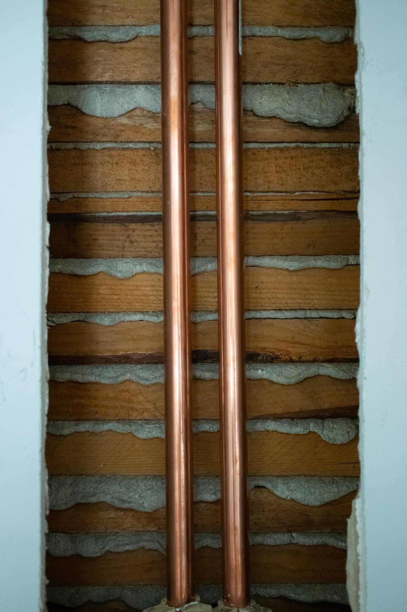

Leaks, clogs, and things that shouldn't be dripping
A dripping supply line, a slow drain, a toilet that runs at 2 a.m. — small faults with loud consequences. We find the actual source instead of patching the symptom, fix it with proper materials, and test it with the water on and the drains running.
- Leak location and repair — supply and drain side
- Fixture repair and replacement, done to the studs if needed
- Pressure problems traced to their cause